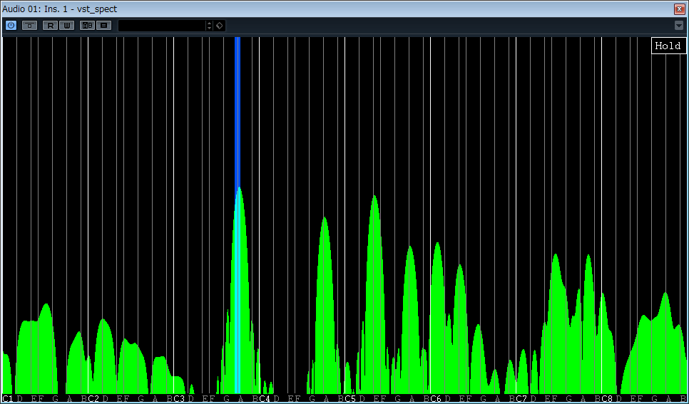

【VSTプラグイン】 Music Scale Spectrum Monitor
更新日：2013/9/29
音声のスペクトルを横軸を音階としてリアルタイムに表示するVSTプラグインです。

特徴
- 音声のスペクトルをリアルタイムに表示
- 横軸を音階で表示
- C1～B8までの約8オクターブを表示
- 10cent単位の周波数分解能
- ホールド機能
- MIDIノート表示機能
動作環境
- Windows XP以上
- VSTプラグインに対応したDAWソフト
ダウンロード
使い方
DAWソフトでVSTプラグインとしてインサートしてください。VSTプラグインのインサート方法は各DAWソフトのマニュアル等を参照してください。
ホールドする場合、右上の「Hold」をクリックしてください。もう一度クリックするとホールドを解除できます。
MIDIノートを表示するには、DAWソフトのオーディオトラックに本VSTプラグイン(vst_spect)をインサートした状態で、MIDIトラックの出力に本VSTプラグイン(vst_spect)を設定してください。
サポート/連絡先
意見・要望・感想・バグ報告はメールで承ります。
更新履歴
ver 1.01 2013/9/29
MIDIノート表示機能追加
ver 1.00 2013/9/26
初公開
VST is a trademark of Steinberg Media Technologies GmbH
トップページへ